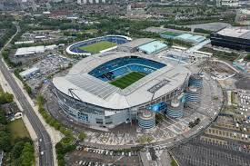
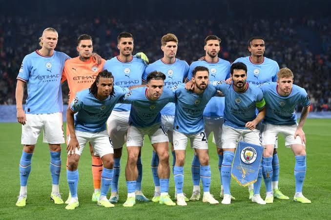

Founded
1880
England
Discover the history, stadium, legendary players, major trophies, records, and interesting facts about Manchester City.
Introduction
Manchester City is a professional soccer club based in Manchester, England. The club was founded in 1880 as St. Mark's before later becoming Ardwick Association Football Club and eventually Manchester City in 1894. The club is known for its sky blue shirts and is often referred to by supporters as "City" or "The Citizens."
Manchester City plays its home matches at the Etihad Stadium in Manchester. The club moved to the stadium in 2003 after previously playing at Maine Road for many decades. The Etihad Stadium has since become an important part of Manchester City's modern identity.
Manchester City has experienced many different periods throughout its long history. The club enjoyed success during the 20th century but also experienced difficult periods that included relegation to lower divisions. City eventually returned to the highest level of English soccer and developed into one of the country's most successful modern clubs.
In recent years, Manchester City has become known for attacking soccer, talented players, and competing for major trophies in England and Europe. Players such as Sergio Agüero, Kevin De Bruyne, Vincent Kompany, David Silva, Yaya Touré, and Rodri have played major roles in the club's modern success.

About the Club
Manchester City's history began in 1880 when the team was formed as St. Mark's. The club later became Ardwick Association Football Club before taking the name Manchester City in 1894. The new name represented the club's connection to the city of Manchester and marked the beginning of a new chapter in its history.
City earned one of its first major honors by winning the FA Cup in 1904. The club later enjoyed another successful period during the late 1960s and early 1970s. During this era, Manchester City won major domestic trophies and also achieved success in Europe.
The club's history has not always been successful. Manchester City experienced several relegations and, during the late 1990s, dropped into the third level of English soccer. City won a dramatic playoff final in 1999 and began working its way back through the English soccer system.
A major change occurred after the club was purchased by the Abu Dhabi United Group in 2008. Manchester City began investing heavily in its team and facilities. New players joined the club, and City quickly became a regular challenger for major English trophies.
One of the most famous moments in Premier League history happened on the final day of the 2011-12 season. Manchester City needed to defeat Queens Park Rangers to win the league championship. Sergio Agüero scored a dramatic goal in stoppage time to give City a 3-2 victory and its first English league title since 1968.
Pep Guardiola became Manchester City manager in 2016. Under Guardiola, City developed a style based on possession, passing, movement, and controlling matches. The club won several Premier League championships and became one of the dominant teams in English soccer.
The 2022-23 season became one of the greatest in the club's history. Manchester City won the Premier League, FA Cup, and UEFA Champions League to complete the Treble. City defeated Inter Milan in the Champions League final to win the competition for the first time in club history.

Club Details
1880
Manchester, England
Etihad Stadium
Sky Blue and White
Club Record
Sergio Agüero is Manchester City's all-time leading goalscorer with 260 goals for the club. The Argentine striker played for City from 2011 to 2021 and became one of the most important players in the club's modern history.
Success
Legendary Players
Manchester City has had a Ballon d'Or winner represent the club. The award is one of the most famous individual honors in world soccer.
Rodri became the first Manchester City player to win the men's Ballon d'Or while representing the club.
Did You Know?